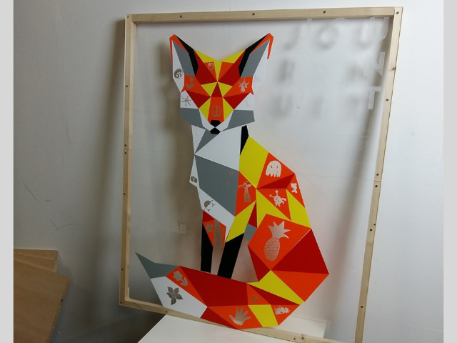
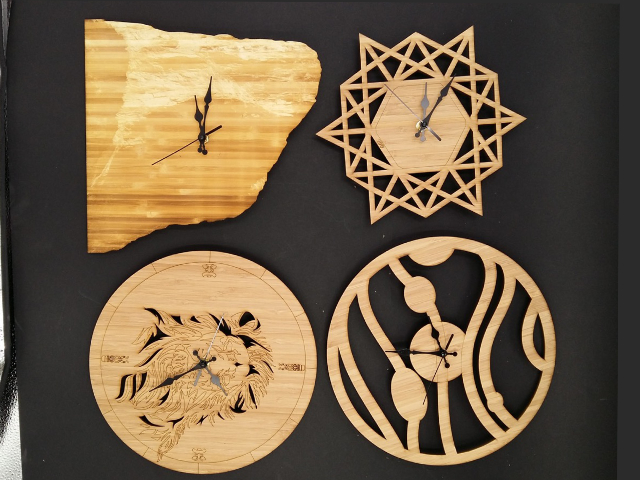
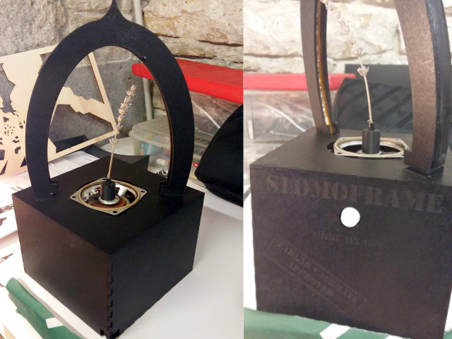
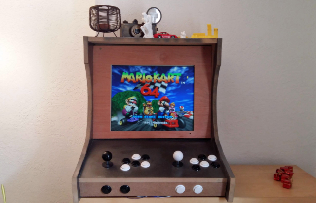
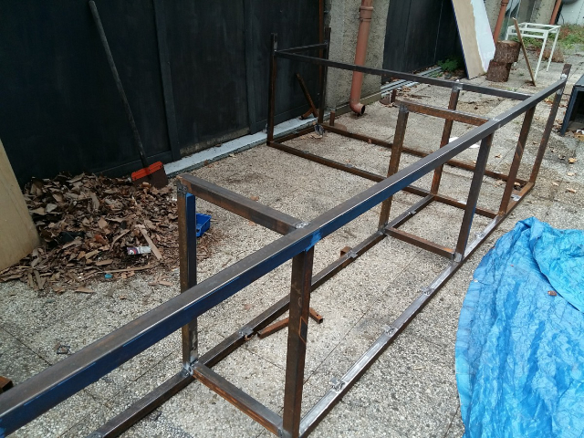
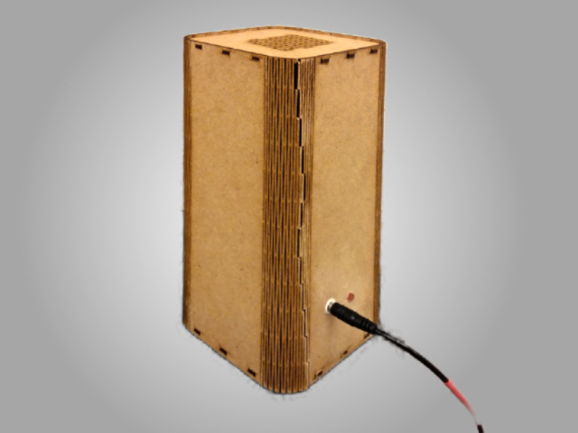
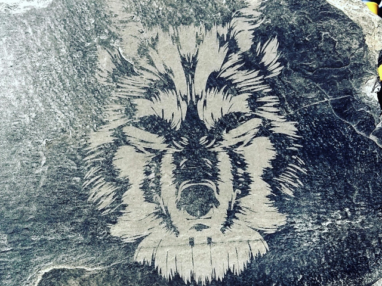
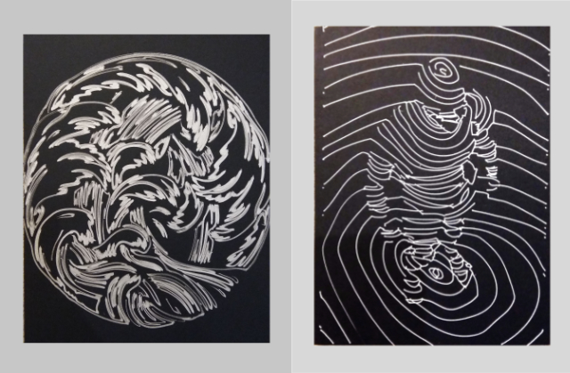
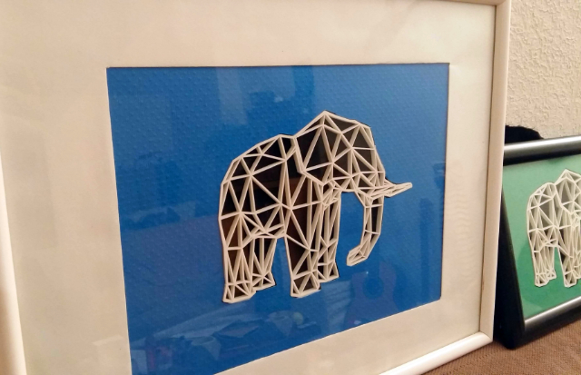
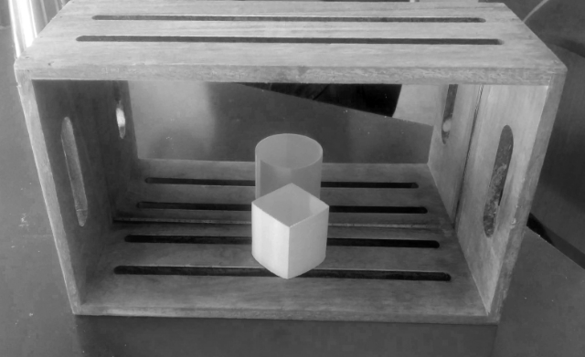

Réalisation Fablab
Voici quelques réalisations réalisées en fablab, ou à l'aide de machine à commande numérique
Renard Low Poly. Découpeuse vinyl, plexiglass découpé et gravé au laser.
Découpe laser sur contreplaqué de bambou
Slomo frame . Une machine motorisée et lumineuse, Inspiré de slow dance . Médium découpé au laser, peinture, arduino, ruban led, haut parleur
. Borne d'arcade D.I.Y fonctionnement avec Raspberry Pi . Médium peint en technique brossée. Cache d'écran lcd en contreplaqué sur charnière
Base de l'établi de la Casemate. Profilé acier, découpe, soudure à l'arc.
Boite à Meuh Mie . Un lecteur d'histoire de personne agée, qui s'utilise de la même manière qu'une "boite à meuh" . Médium, découpé en pattern sur les angles
Gravure laser sur Ardoise
Dessin sur papier via machine CNC. Plotter vinyl
Série de 4 tableaux, animaux low poly. Impression 3d, découpe papier, et tissu noir.
Illusion d'optique . Impression 3d, miroir plexi.